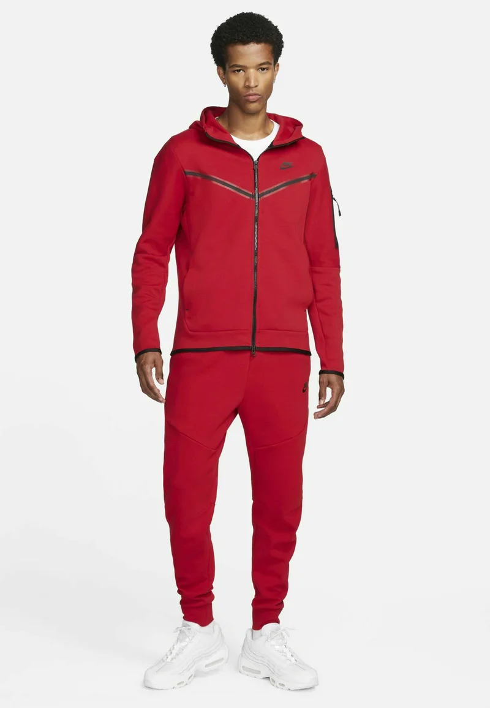
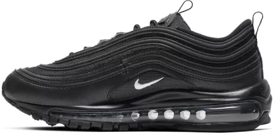

Strój ucznia ŚlTZN
Przykładowy strój ucznia ŚlTZN
Ubiór:
Moim zdaniem każdy uczeń śltzn powinien nosić taki strój:
- Spodnie oraz bluza Tech Fleece, marki nike. Oprócz tego buty obowiązkowo model nike air max, skarpetki należy dobrać w zależności od koloru reszty stroju(do czarnych butów białe skarpetki), ważne tylko aby były marki nike.

- Pozytywnym aspektem takiego ubioru jest na pewno to, że nie trzeba przebierać się na wf
- Taki strój jest wygodny i bardzo elegancki
- Osoby chodzące w tym stroju są powszechnie szanowane
- Jedyną wadą jest to że jest to drogie ubranie ale na szczęście koszty mundurków ponosi szkoła